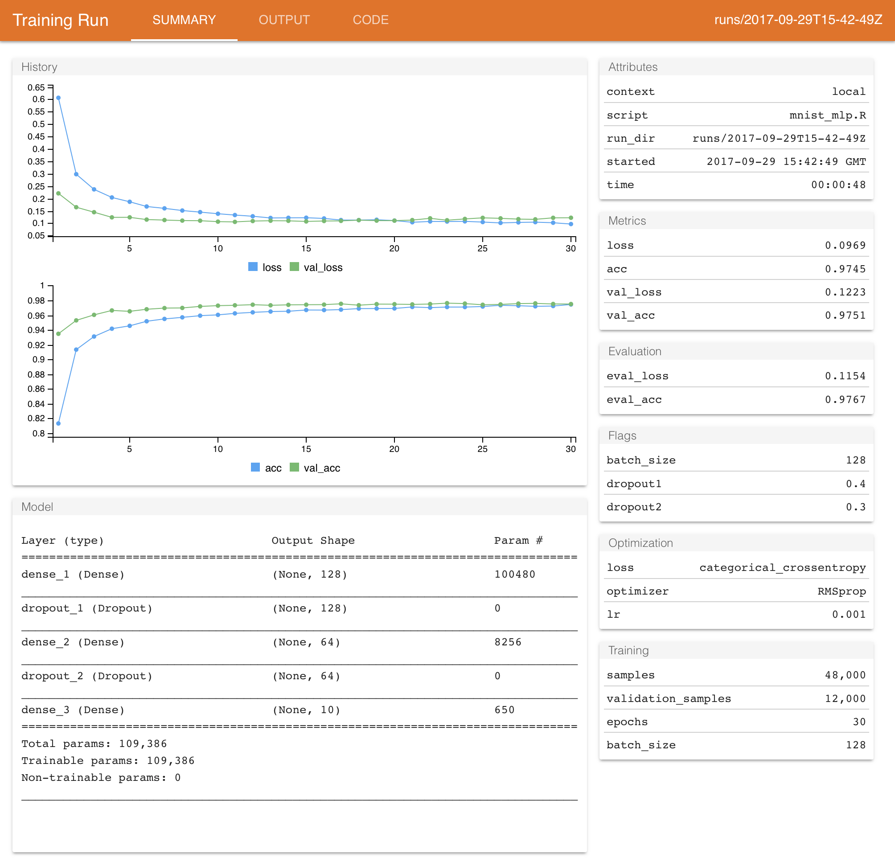

2018-02-06
Please note that the information presented in this post reflects the package as it stood when initially released, and may now be outdated. For the most up-to-date information, kindly refer to https://tensorflow.rstudio.com/.
Over the past year we’ve been hard at work on creating R interfaces to TensorFlow, an open-source machine learning framework from Google. We are excited about TensorFlow for many reasons, not the least of which is its state-of-the-art infrastructure for deep learning applications.
In the 2 years since it was initially open-sourced by Google, TensorFlow has rapidly become the framework of choice for both machine learning practitioners and researchers. On Saturday, we formally announced our work on TensorFlow during J.J. Allaire’s keynote at rstudio::conf:
In the keynote, J.J. describes not only the work we’ve done on TensorFlow but also discusses deep learning more broadly (what it is, how it works, and where it might be relevant to users of R in the years ahead).
The R interface to TensorFlow consists of a suite of R packages that provide a variety of interfaces to TensorFlow for different tasks and levels of abstraction, including:
keras—A high-level interface for neural networks, with a focus on enabling fast experimentation.
tfestimators— Implementations of common model types such as regressors and classifiers.
tensorflow—Low-level interface to the TensorFlow computational graph.
tfdatasets—Scalable input pipelines for TensorFlow models.
Besides the various R interfaces to TensorFlow, there are tools to help with training workflow, including real time feedback on training metrics within the RStudio IDE:
The tfruns package provides tools to track, and manage TensorFlow training runs and experiments:

Training convolutional or recurrent neural networks can be extremely computationally expensive, and benefits significantly from access to a recent high-end NVIDIA GPU. However, most users don’t have this sort of hardware available locally. To address this we have provided a number of ways to use GPUs in the cloud, including:
The cloudml package, an R interface to Google’s hosted machine learning engine.
RStudio Server with Tensorflow-GPU for AWS (an Amazon EC2 image preconfigured with NVIDIA CUDA drivers, TensorFlow, the TensorFlow for R interface, as well as RStudio Server).
Detailed instructions for setting up an Ubuntu 16.04 cloud desktop with a GPU using the Paperspace service.
There is also documentation on setting up a GPU on your local workstation if you already have the required NVIDIA GPU hardware.
We’ve also made a significant investment in learning resources, all of these resources are available on the TensorFlow for R website at https://tensorflow.rstudio.com.
Some of the learning resources include:
 |
Deep Learning with R Deep Learning with R is meant for statisticians, analysts, engineers, and students with a reasonable amount of R experience but no significant knowledge of machine learning and deep learning. You’ll learn from more than 30 code examples that include detailed commentary and practical recommendations. You don’t need previous experience with machine learning or deep learning: this book covers from scratch all the necessary basics. You don’t need an advanced mathematics background, either—high school level mathematics should suffice in order to follow along. |
 |
Deep Learning with Keras Cheatsheet A quick reference guide to the concepts and available functions in the R interface to Keras. Covers the various types of Keras layers, data preprocessing, training workflow, and pre-trained models. |
 |
Gallery In-depth examples of using TensorFlow with R, including detailed explanatory narrative as well as coverage of ancillary tasks like data preprocessing and visualization. A great resource for taking the next step after you’ve learned the basics. |
 |
Examples Introductory examples of using TensorFlow with R. These examples cover the basics of training models with the keras, tfestimators, and tensorflow packages. |
We’ll be continuing to build packages and tools that make using TensorFlow from R easy to learn, productive, and capable of addressing the most challenging problems in the field. We’ll also be making an ongoing effort to add to our gallery of in-depth examples. To stay up to date on our latest tools and additions to the gallery, you can subscribe to the TensorFlow for R Blog.
While TensorFlow and deep learning have done some impressive things in fields like image classification and speech recognition, its use within other domains like biomedical and time series analysis is more experimental and not yet proven to be of broad benefit. We’re excited to how the R community will push the frontiers of what’s possible, as well as find entirely new applications. If you are an R user who has been curious about TensorFlow and/or deep learning applications, now is a great time to dive in and learn more!